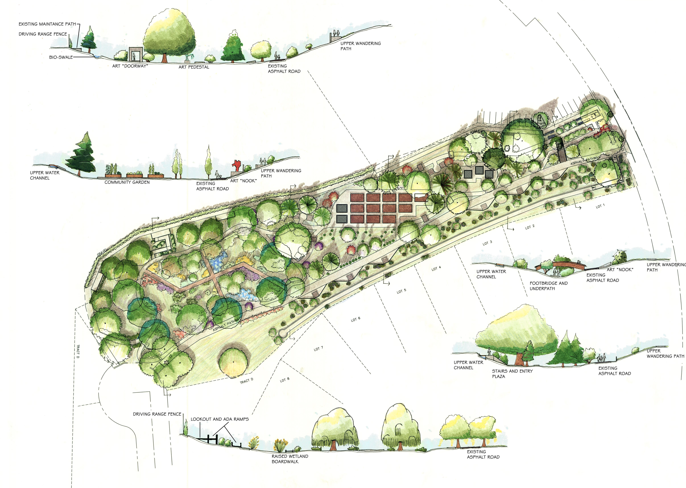

Il couvre 200 hectares de superficie. Il contient actuellement 2 700
espèces et variétés, mais on prévoit d'ici les prochaines années d'en
regrouper plus de 3 000.
Il est divisé en plusieurs zones:

* La zone systématique, où les végétaux sont regroupés selon leurs
parentés botaniques. Cette zone correspond en partie aux plus anciennes
plantations, c'est à dire la zone accessible au public.
* La zone géographique (Asie, Amérique, Europe), qui couvre la plus
grande partie de l'Arboretum Les arbres y sont regroupés en fonction de
leurs origines géographiques. Elle est constituée de jeunes sujets
plantés depuis 1960. Chaque espèce est représenté par un groupe de 6
individus.
* La zone horticole, située au centre. Elle présente des arbres qui
n'existent pas dans la nature, hybrides et variétés horticoles issus de
sélections faites par l'homme.
* Les pépinières, consacrées à l'élevage des jeunes arbres à partir des
graines, avant leur plantation définitive dans l'Arboretum.